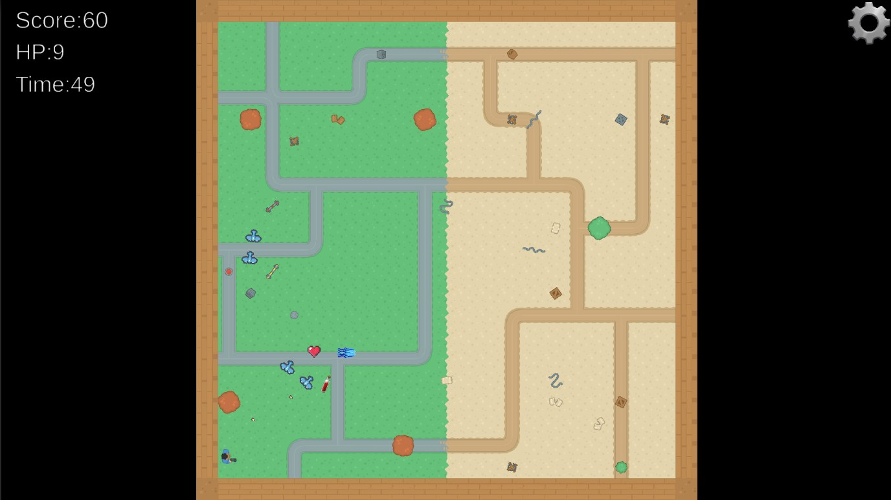

Challenge
Make the difficulty ramp clearly across two levels while keeping enemies moving through cluttered arenas.
Game development · Unity / C# · Individual coursework
A two-level top-down shooter with pursuing enemies, procedurally placed obstacles, dash movement and power-ups.

Make the difficulty ramp clearly across two levels while keeping enemies moving through cluttered arenas.
Programmed movement, dash, aiming and shooting, health, enemy spawning and pursuit, procedural obstacle placement, menus and a local leaderboard.
Level 1 teaches the controls; Level 2 doubles the enemies, adds ranged and melee types and more walls, so cover and pickups matter.
| Level 1 | Level 2 | |
|---|---|---|
| Enemies | 10 basic pursuers | 20, incl. ranged aircraft and melee tanks |
| Walls | 30 | 70 |
| Player goal | Learn movement, aiming and dash | Use cover and pickups |
Controls, enemy behaviour and level design.
Credits: Sprites and tiles from Kenney’s Top-down Shooter, Top-down Tanks and Pixel Shmup packs (CC0, kenney.nl). Game-over music by Daniel Birch. All gameplay code is my own; AI assistance used during development is declared in the design report.